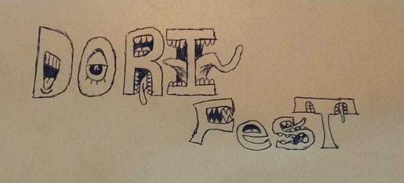
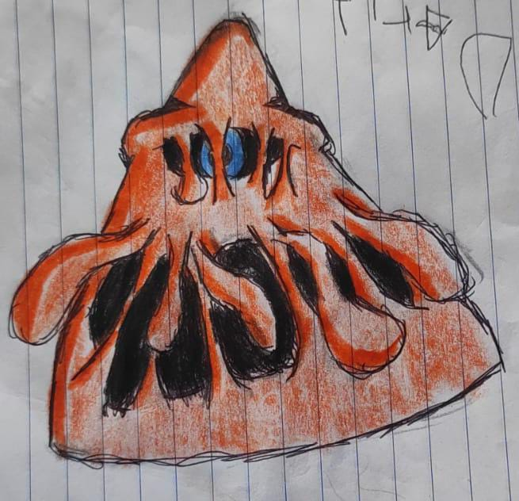
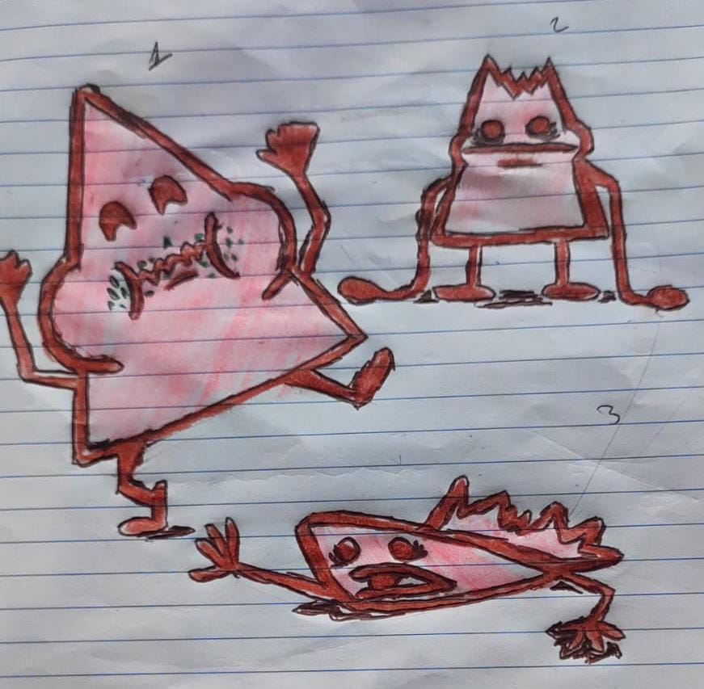
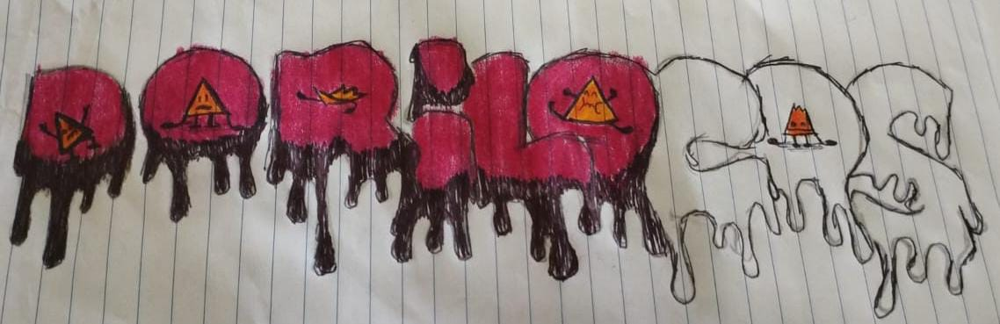
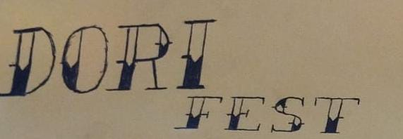
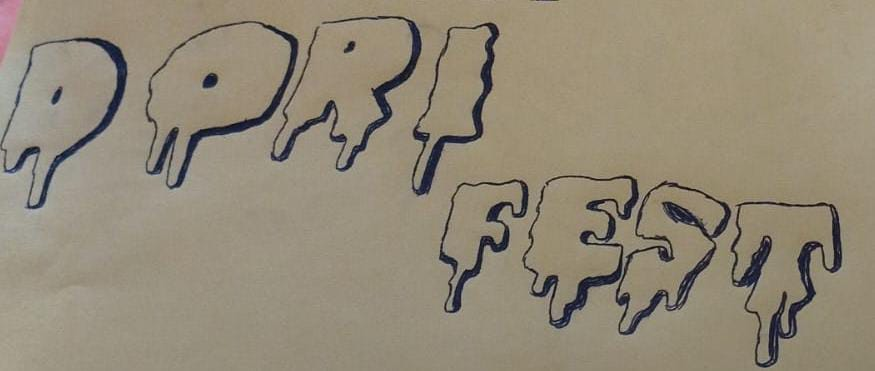

Descripción
Esta microempresa llamada "DoriFest" es un proyecto de la materia de economia,
y tenemos como objetivo, vender a la mayor cantidad posible de personas en el CUA,
por que si no lo logramos, pancho no nos pasara en su materia y por ende no podremos graduarnos,
profe juan, reze por el 3bg2 para que nos graduemos, wuuuuuuu.
Arte de la microempresa


Nombre de la microempresa y eslogan
DoriFest "Cada bocado, una aventura crujiente"
Ubicación
Información
Despues de exhaustivas investigaciones,se analizo distintos temas, como el análisis del mercado, que indica que se debe estudiar el dinero invertido, ganancias, competencia, roles, departamentales, tasas de exito y fracaso y el publico objetivo.
Entre la competencia esta el grupo 3bg1, que su producto sera un puesto de papas locas, y una forma de sacarle ventaja o contrarrestarlo, sera la variedad, ya que en el caso de las papas locas, no se encontro esa informacion asi que seria un gran paso adelante de ellos.
Sobre temas de dinero, se calculo aproximaciones, ya que los precios de los ingredientes, de la estructura, pasajes y gasolina, estan suejetos a cambios, el valor total aproximado seria de $2100 pesos MXN.
, a continuación, los precios de los ingredientes, cortesia de zorro abarotero:
| doritos, mayoreo: $540 |
gomitas aro durazno, 3 piezas: $77 |
gomitas de oso, 3 piezas= $99 |
| gomitas lombrices, 3 piezas: $99 |
salsa botanera, pieza: $77 |
chamoy, pieza: $51 |
Misión
Se busca que se logre una ganacia mayor a la inversión, también compromiso con los involucrados de que atenderan su puesto todo el tiempo que dure esto, que por si alguna razon, termina fracasando el proyecto, no se abandonara hasta el final, responsabilidad de conllevar mucha responsabilidad y positivamente, tener experiencia para que cuando nos enfrentemos al mundo real, sepamos lo fundamental en caso de situaciones poco deseadas.
Ideas de diseño desechadas



Multimedia
Esta pagina web a sido posible por mi conocimiento de las clases del profe juan, y tambien posible por el siguiente video
Créditos
Programacion de la pagina web
yo, Pedro (peter)
Dibujos
Jose (Jorge)
Investigaciones y dirección
Ari, Zunduri, Naomi, Alan, Emanuel, Yurem, Jonny
Las demás personas son mencionados por ser parte del equipo de esta microempresa, ahora si, es todo, gracias por ver 🫡